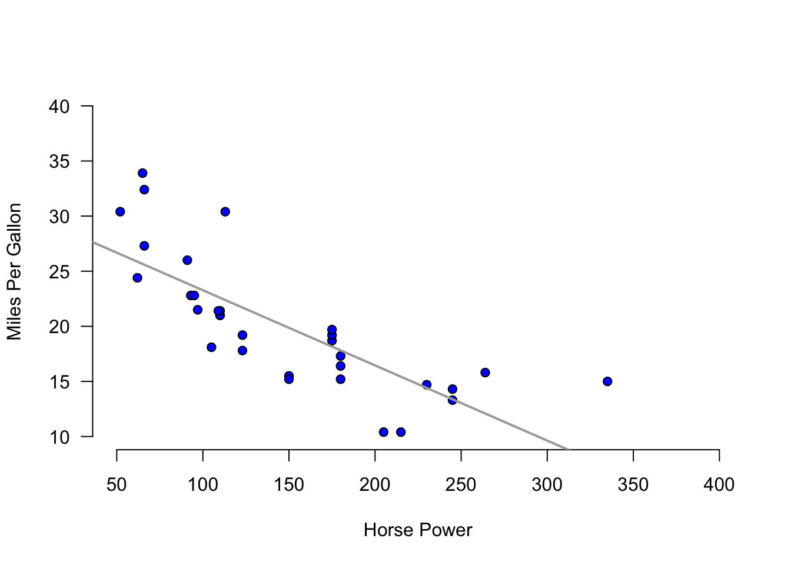
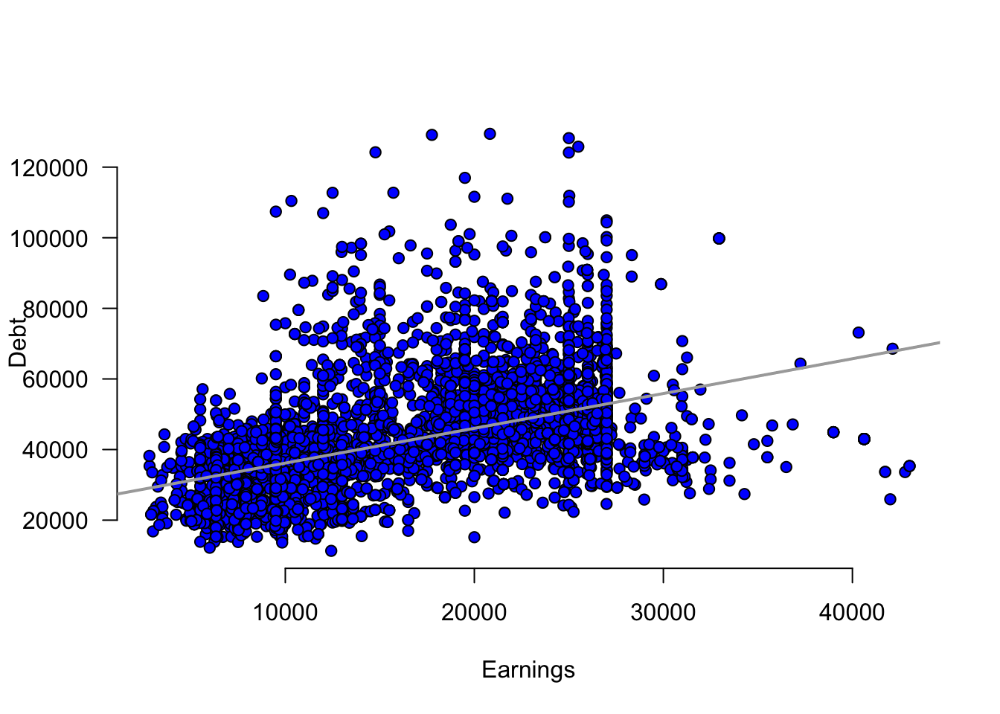

x<-c(20,21,15,18,25)
(devx<-x-mean(x))[1] 0.2 1.2 -4.8 -1.8 5.2Measures of association determine whether there is a linear relationship between two variables. They also determine the strength of the relationship.
The covariance is a measure that determines the direction of the relationship between two variables. It is calculated by \(s_{xy}=\frac {\sum(x_i-\bar{x})(y_i-\bar{y})}{\sum (x_i-\bar{x})^2}\). If \(s_{xy}>0\) there is a direct relationship, if \(s_{xy}<0\) there is an inverse relationship, and if \(s_{xy}=0\) there is no relationship.
The correlation measures the strength of the linear relationship. It is calculated by \(r= \frac {s_{xy}}{s_x s_y}\). The correlation coefficient is between \([-1,1]\). When the correlation coefficient is \(1\) (\(-1\)), there is a perfect direct (inverse) relationship between the two variables.
The coefficient of determination or \(R^2\), measures the percent of variation in \(y\) explained by variations in \(x\). It is calculated by \(R^2=r^2\). The next chapter expands on this measure.
A scatter plot displays pairs of [\(x\),\(y\)] as points on the Cartesian plane. The plot provides a visual aid to determine the relationship between two variables.
To calculate the covariance use the cov() function.
The correlation coefficient can be calculated using the cor() function.
The plot() function will create scatter plots.
The following exercises will help you understand statistical measures that establish the relationship between two variables. In particular, the exercises work on:
Calculating covariance and correlation.
Using R to plot scatter diagrams.
Calculating the coefficient of determination.
Answers are provided below. Try not to peak until you have a formulated your own answer and double checked your work for any mistakes.
For the following exercises, make your calculations by hand and verify results using R functions when possible.
| x | 20 | 21 | 15 | 18 | 25 |
|---|---|---|---|---|---|
| y | 17 | 19 | 12 | 13 | 22 |
| w | 19 | 16 | 14 | 11 | 18 |
|---|---|---|---|---|---|
| z | 17 | 20 | 20 | 16 | 18 |
You will need the mtcars data set to answer this question. This data set is part of R. You don’t need to download any files to access it.
Calculate the correlation coefficient between hp and mpg. Explain the results. Specifically, the direction of the relationship and the strength given the context of the problem.
Create a scatter diagram of the two variables. Is the scatter diagram what you expected after you calculated the correlation coefficient?
Calculate the coefficient of determination. How close is it to one? What else could be explaining the variation in the mpg? Let your dependent variable be mpg.
You will need the College data set to answer this question. You can find this data set here: https://jagelves.github.io/Data/College.csv
Create a scatter diagram between GRAD_DEBT_MDN (Median Debt) and MD_EARN_WNE_P10 (Median Earnings). What type of relationship do you observe between the variables?
Calculate the correlation coefficient and the coefficient of determination. According to the data, are higher debts correlated with higher earnings?
Let’s start by finding the deviations from the mean for the x variable in R.
x<-c(20,21,15,18,25)
(devx<-x-mean(x))[1] 0.2 1.2 -4.8 -1.8 5.2We will do the same with y:
y<-c(17,19,12,13,22)
(devy<-y-mean(y))[1] 0.4 2.4 -4.6 -3.6 5.4Note that when the deviations in x are negative (positive), they are also negative (positive) in y. This is indicative of a direct relationship between the two variables. The covariance is given by:
(Ex1Cov<-sum(devx*devy)/(length(devx)-1))[1] 14.9We can verify this by using cov() function in R.
cov(x,y)[1] 14.9The correlation coefficient is found by dividing the covariance over the product of standard deviations. In R:
(Ex1Cor<-Ex1Cov/(sd(x)*sd(y)))[1] 0.9678386We can once more verify the result in R with the built in function cor().
cor(x,y)[1] 0.9678386Let’s start with w and finding the deviations from the mean in R.
w<-c(19,16,14,11,18)
(devw<-w-mean(w))[1] 3.4 0.4 -1.6 -4.6 2.4We will do the same with z:
z<-c(17,20,20,16,18)
(devz<-z-mean(z))[1] -1.2 1.8 1.8 -2.2 -0.2The covariance is given by:
(Ex2Cov<-sum(devw*devz)/(length(devz)-1))[1] 0.85We can verify this with the cov() function in R.
cov(w,z)[1] 0.85The correlation coefficient is found by dividing the covariance over the product of standard deviations. In R:
(Ex2Cor<-Ex2Cov/(sd(z)*sd(w)))[1] 0.1480558We can once more verify the result in R with the built in function cor().
cor(w,z)[1] 0.1480558In R we can easily calculate the correlation coefficient with the cor() function.
cor(mtcars$mpg,mtcars$hp)[1] -0.7761684plot(y=mtcars$mpg,x=mtcars$hp, main="",
axes=F,pch=21, bg="blue",
xlab="Horse Power",
ylab="Miles Per Gallon", ylim=c(10,40),xlim=c(50,400))
axis(side=1, labels=TRUE, font=1,las=1)
axis(side=2, labels=TRUE, font=1,las=1)
abline(lm(mtcars$mpg~mtcars$hp),
col="darkgray",lwd=2)
In R we can calculate the coefficient of determination by squaring the correlation coefficient.
cor(mtcars$mpg,mtcars$hp)^2[1] 0.6024373Start by loading the data. We’ll use the read.csv() function:
College<-read.csv("https://jagelves.github.io/Data/College.csv")The two variables of interest are GRAD_DEBT_MDN and MD_EARN_WNE_P10. The following code creates the scatter plot:
plot(y=College$MD_EARN_WNE_P10, x=College$GRAD_DEBT_MDN,
main="", axes=F, pch=21, bg="blue",
xlab="Earnings",ylab="Debt")
axis(side=1, labels=TRUE, font=1,las=1)
axis(side=2, labels=TRUE, font=1,las=1)
abline(lm(MD_EARN_WNE_P10~GRAD_DEBT_MDN, data=College),
col="darkgrey",lwd=2)
In R we can start with the correlation coefficient:
cor(College$MD_EARN_WNE_P10,College$GRAD_DEBT_MDN)[1] 0.4328106The coefficient of determination is:
cor(College$MD_EARN_WNE_P10,College$GRAD_DEBT_MDN)^2[1] 0.187325